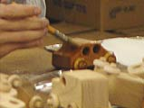
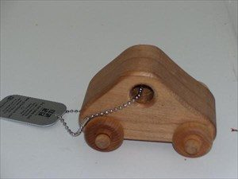
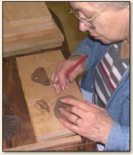
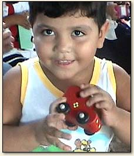
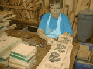

Check out our introduction video!
Welcome to the Happy Factory!
This is a non-profit organization dedicated to bringing joy and happiness to children who have none.
We have currently shipped almost 2 million toys around the world!
We are a non-profit organization that relies on the generosity of donors and volunteers to continue our mission.
Feel free to explore our website to learn more about us and how you can get involved!
A bit about our mission:
To date, over 1,600,000 Happy Factory toys have been given to more than 600 different organizations, groups and people in 125 countries. No Happy Factory worker makes a dime and the gifting is still gathering momentum.
With apologies to Sir Winston Churchill, Charles says “This isn’t the end. This isn’t even the beginning of the end. This is only the end of the beginning.”
In memorium - Charles T. Cooley, Founder Happy Factory (1930-2011)




